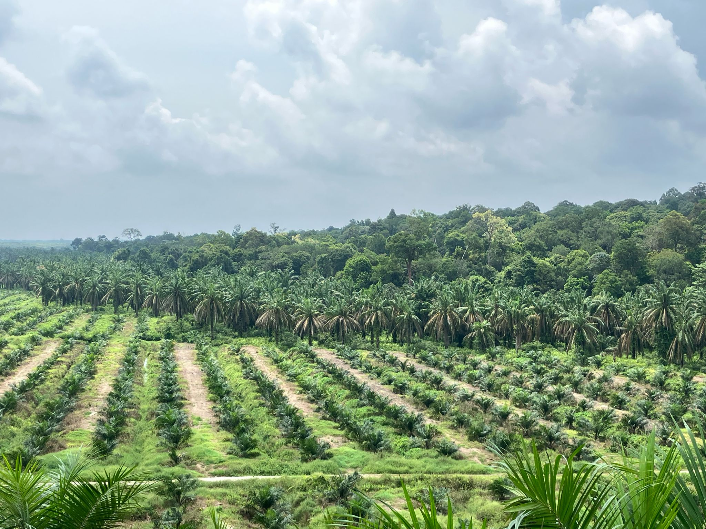

Research Overview
Explore our major research projects below.
Introduction
The BEFTA project aims to quantify the effect of habitat complexity within oil palm plantations on biodiversity and the role of this biodiversity in ecosystem functioning and productivity...
- Project objectives:
- Quantify the effect of habitat complexity...
- Develop experimental approaches...
- Model optimal understory...
- Experimental setup: 18 plots...
- Treatments:
- Reduced complexity...
- Normal complexity...
- Enhanced complexity...

Figure 1: BEFTA experimental design...


NERC El Niño Project
As part of the BEFTA project, we were fortunate to have a NERC-funded project...
- Studied how drought affected biodiversity...
- Assessed whether increased complexity improved resilience...
- Use findings to inform sustainable management...
Introduction
Riparian buffers—also known as riparian reserves, margins, or strips—are areas of non-cultivated habitat maintained alongside rivers and streams. In tropical agricultural landscapes, these habitats play a crucial role in sustaining ecosystem function. They help regulate water quality and hydrological cycles, protect freshwater biodiversity, provide habitat for terrestrial species, and can contribute to carbon storage within agricultural systems. Research across Southeast Asia shows that wider and more structurally complex buffers generally deliver the greatest environmental benefits, particularly when forest vegetation is retained or restored.
Despite these known benefits, many older oil palm plantations were established before riparian protection laws or sustainability certification standards (such as the RSPO) were in place. As a result, large areas lack functional buffers and now require restoration during scheduled replanting. However, there is limited guidance on how best to restore forest habitat within riparian zones still under active plantation management.
The Riparian Ecosystem Restoration in Tropical Agriculture (RERTA) Project, established in 2018 as part of the BEFTA Programme, addresses this knowledge gap. Working within SMARTRI estates in Riau, Indonesia, the project tests multiple large-scale riparian restoration strategies during oil palm replanting. The experiment spans 50 m on each side of the river (the Indonesian legal requirement for small rivers) over a 400 m length, creating one of the largest controlled riparian restoration experiments in tropical agriculture.
The RERTA Project aims to:
- Evaluate the effectiveness of different large-scale riparian restoration strategies during oil palm replanting.
- Identify restoration approaches that best support biodiversity, ecosystem functioning, and forest regeneration.
- Provide practical, evidence-based guidance for riparian restoration that can be adopted by oil palm estates, certification bodies, and policymakers.
- Understand how restored riparian habitats influence insect communities, vegetation structure, microclimate, ecosystem processes, and long-term forest recovery.
Sampling locations:
To assess ecological responses across the landscape, biodiversity and environmental data are collected at:
- Within the riparian margin (0 m from the river)
- 50 m from the river (edge of the restored buffer)
- 500 m into the plantation (landscape-scale comparison/control environment)
These locations allow us to understand both local and wider landscape effects of riparian restoration.
Treatments:
The RERTA experiment includes four riparian restoration treatments, reflecting real-world options available to plantation managers during replanting:
- A: Enrichment planting + mature palm buffer – Mature palms are retained and enrichment planted with six native forest tree species.
- B: No restoration + mature buffer – Mature palms are retained, and vegetation is allowed to regenerate naturally.
- C: Enrichment + remove mature oil palm – All mature palms are removed, and six native species are enrichment planted.
- D: No restoration + replant – Oil palm is replanted to the river’s edge, representing non-certified or non-compliant management.
These treatments allow comparison of forest recovery, biodiversity responses, and ecosystem benefits across contrasting restoration intensities.

Figure 1: RERTA restoration treatment types.
Future Directions:
The RERTA Project is long-term, and future research will focus on:
- Evaluating how restoration influences ecosystem functions such as nutrient cycling, microclimate regulation, pest control, and carbon storage.
- Scaling up results to develop practical restoration guidelines for tropical agricultural landscapes.
- Working with policymakers and certification bodies to refine riparian buffer standards and promote sustainable plantation management.
- Modelling landscape-level benefits of restored riparian networks for biodiversity conservation.
Introduction
The RERTA Smallholders Project was established in 2023 as an extension of the main RERTA programme to expand our understanding of waterway management beyond industrial plantations and into smallholder-owned landscapes. Smallholders collectively produce more than 40% of Indonesia’s palm oil, making their management practices critical both for local livelihoods and for national production. These landscapes also represent a substantial proportion of total land cover, meaning that the decisions smallholders make have significant ecological implications.
This project focuses on understanding how and why smallholders manage waterways as they do, and exploring what this means for biodiversity, ecosystem functioning and long-term sustainability. By examining management practices and their ecological consequences, the project aims to identify opportunities for improved landscape optimisation and to help build futures that benefit both growers and the environment.
RERTA Smallholders is a major collaboration between the University of Cambridge (UK), University of Nottingham (UK), SMART Research Institute (Indonesia) and IPB University (Indonesia). The research is funded by the David and Lucille Packard Foundation and is led by Becky Heath, Agung Aryawan, Ed Turner and Jamal Mukhlish.
Fieldwork encompasses 40 smallholder farms, 12 industrial farms, and a conservation area across riparian systems in Riau, Sumatra.
Aims
- Document the extent of variation in smallholder land management around waterways.
- Assess the ecological consequences of different management decisions on biodiversity, ecosystem functioning and ecosystem structure.
- Develop tailored management guidelines that support enhanced sustainability.
Experimental Setup
The project is based on a network of 40 smallholder farms located along four river systems in Riau, Sumatra. Interviews were conducted with each farmer to understand their motivations and decision-making processes surrounding waterway management. Ecological assessments have been carried out on all sites, covering:
- 19 ecological survey protocols
- Biodiversity assessments
- Ecosystem process-rate measurements
- LiDAR-based structural scanning
- Yield assessments
These combined datasets allow the team to directly relate management decisions to ecological outcomes.
Progress and Future Plans
Data collection was completed during 2023–2024. Results are now being synthesised for academic publication, with guidelines for smallholder farmers scheduled for release in 2026.
Figure 1: Members of the RERTA and RERTA Smallholders team from all contributing institutions.

Figure 2: Structural LiDAR scan from one of the smallholder plantation in the RERTA Smallholders experiment.
Figure 3: Vista over a new industrially managed plantation, which shares a river with the conservation area used in RERTA Smallhodlers.
Introduction
The Sustainable Oil Palm in West Africa (SOPWA) Project Oil palm is native to West and Central Africa, but relatively little research on its cultivation in these regions has occurred. The Sustainable Oil Palm in West Africa (SOPWA) project aims to address this gap, investigating the socioecological impacts of traditional and industrial approaches to oil palm cultivation. SOPWA – which began in 2021 – occurs in Sinoe County, Liberia, and is a collaboration between international academic researchers (including University of Liberia), palm oil company Golden Veroleum Liberia, and partners from the Liberian government and local communities in the study area. Its field-based study design features 54 plots in areas of rainforest, fallowed farmland with wild-growing oil palms (“country palm” style of cultivation), and industrial oil palm plantation. Plots are spatially clustered in a robust hierarchical study design, with 18 plots each in rainforest, country palm, and industrial oil palm. To date, surveys in plots have focused on the biodiversity of trees, understory vegetation, birds, bats, ground-dwelling mammals, insects, and spiders. We have also monitored various ecosystem processes and services (including vegetation complexity, microclimate, predation, seed removal, soil feeding activity, and plant provisioning services). SOPWA has also contributed to improving natural history knowledge in the region, for instance, spider surveys led to the describing of two spider species (Crinopseudoa kru and C. sinoensis).
Aims
SOPWA aims to investigate the socioecological impacts of traditional and industrial approaches to oil palm cultivation in West African rainforest landscapes. To do this, we have set up a network of monitoring plots (50 x 50m) in three habitats in Sinoe County, Liberia:
- Forest – Areas of old-growth Western Guinean lowland rainforest with no record of substantial disturbance. This is the reference habitat of Sinoe County.
- Country palm – Areas of fallowed traditional farms, established by local people using slash-and-burn practices. Farms have been abandoned for at least two years at the time of sampling, but local people still maintain and visit these areas to harvest country palms. Various crops were cultivated in these areas when active. Pesticides, herbicides, and fertilisers have never been applied.
- Industrial oil palm – These plots are in industrial oil palm farms managed by Golden Veroleum Liberia. All farms are oil palm monocultures managed using fertilisers, herbicides, and pesticides. Palms are harvested manually every 10–15 days.
The SOPWA plots are spatially clustered, with each cluster featuring three plots per habitat. There are 54 plots total (18 per habitat).
Figure 1: SOPWA occurs in Sinoe County, Liberia, and features monitoring plots in three habitats: Forest (purple), country palm (yellow), and industrial oil palm (red). There are 54 plots total (18 per habitat type), arranged in a robust hierarchical spatially clustered study design. The pastel-coloured areas of the map indicate Golden Veroleum Liberia’s industrial oil palm plantations in Sinoe County.
Progress and future plans
SOPWA is continuing to process and publish findings from its first two years of field surveys (2022–2023). We will continue to update our list of publications as new findings are communicated.
We also have two exciting current sub-projects. The first is focused on restoration dynamics in country palm plots. This work is assessing how country palm plots restore over time, comparing them with active farms and rainforest controls. The second is led by Francisco dos Reis Silva (University of Helsinki), investigating how traditional and industrial approaches to oil palm cultivation influence herpetofauna biodiversity and ecosystem functioning.
Malaysia Agroecology Project
Introduction
The Malaysia Agroecology Project investigates biodiversity, ecosystem functioning, and forest–agriculture interactions in Malaysian Borneo, with a particular emphasis on oil palm production landscapes. This region has experienced extensive land-use change, resulting in fragmented forest patches surrounded by agricultural areas.
The project investigates how wildlife communities persist and move within these modified habitats, and how ecological processes respond to different management interventions. Research spans both the SAFE (Stability of Altered Forest Ecosystems) landscape and neighbouring oil palm plantations.
Aims
- Assess biodiversity patterns across fragmented forests and oil palm landscapes.
- Understand ecological processes and how they respond to land-use change.
- Identify management and restoration opportunities to improve ecological resilience.
Figure: Forest–plantation interfaces studied in Malaysia (placeholder image).